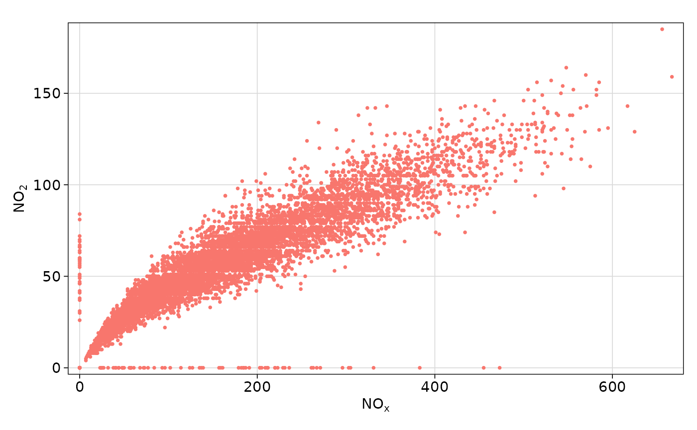
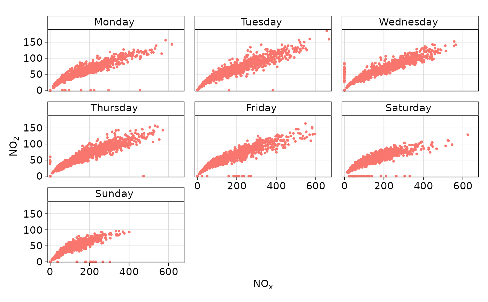

Scatter plots with conditioning and three main approaches: conventional scatterPlot, hexagonal binning and kernel density estimates. The former also has options for fitting smooth fits and linear models with uncertainties shown.
Usage
scatterPlot(
mydata,
x = "nox",
y = "no2",
z = NA,
method = "scatter",
group = NA,
avg.time = "default",
data.thresh = 0,
statistic = "mean",
percentile = NA,
type = "default",
smooth = FALSE,
spline = FALSE,
linear = FALSE,
ci = TRUE,
mod.line = FALSE,
cols = "hue",
plot.type = "p",
key = TRUE,
key.title = group,
key.columns = 1,
key.position = "right",
strip.position = "top",
log.x = FALSE,
log.y = FALSE,
x.inc = NULL,
y.inc = NULL,
limits = NULL,
windflow = NULL,
y.relation = "same",
x.relation = "same",
ref.x = NULL,
ref.y = NULL,
k = NA,
dist = 0.02,
auto.text = TRUE,
plot = TRUE,
...
)Arguments
- mydata
A data frame containing at least two numeric variables to plot.
- x
Name of the x-variable to plot. Note that x can be a date field or a factor. For example,
xcan be one of theopenairbuilt in types such as"year"or"season".- y
Name of the numeric y-variable to plot.
- z
Name of the numeric z-variable to plot for
method = "scatter"ormethod = "level". Note that formethod = "scatter"points will be coloured according to a continuous colour scale, whereas formethod = "level"the surface is coloured.- method
Methods include “scatter” (conventional scatter plot), “hexbin” (hexagonal binning using the
hexbinpackage). “level” for a binned or smooth surface plot and “density” (2D kernel density estimates).- group
The grouping variable to use, if any. Setting this to a variable in the data frame has the effect of plotting several series in the same panel using different symbols/colours etc. If set to a variable that is a character or factor, those categories or factor levels will be used directly. If set to a numeric variable, it will split that variable in to quantiles.
- avg.time
This defines the time period to average to. Can be
"sec","min","hour","day","DSTday","week","month","quarter"or"year". For much increased flexibility a number can precede these options followed by a space. For example, an average of 2 months would beavg.time = "2 month". In addition,avg.timecan equal"season", in which case 3-month seasonal values are calculated with spring defined as March, April, May and so on.Note that
avg.timecan be less than the time interval of the original series, in which case the series is expanded to the new time interval. This is useful, for example, for calculating a 15-minute time series from an hourly one where an hourly value is repeated for each new 15-minute period. Note that when expanding data in this way it is necessary to ensure that the time interval of the original series is an exact multiple ofavg.timee.g. hour to 10 minutes, day to hour. Also, the input time series must have consistent time gaps between successive intervals so thattimeAverage()can work out how much 'padding' to apply. To pad-out data in this way choosefill = TRUE.- data.thresh
The data capture threshold to use (%). A value of zero means that all available data will be used in a particular period regardless if of the number of values available. Conversely, a value of 100 will mean that all data will need to be present for the average to be calculated, else it is recorded as
NA. See alsointerval,start.dateandend.dateto see whether it is advisable to set these other options.- statistic
The statistic to apply when aggregating the data; default is the mean. Can be one of
"mean","max","min","median","frequency","sum","sd","percentile". Note that"sd"is the standard deviation,"frequency"is the number (frequency) of valid records in the period and"data.cap"is the percentage data capture."percentile"is the percentile level (%) between 0-100, which can be set using the"percentile"option — see below. Not used ifavg.time = "default".- percentile
The percentile level used when
statistic = "percentile". The default is 95%.- type
Character string(s) defining how data should be split/conditioned before plotting.
"default"produces a single panel using the entire dataset. Any other options will split the plot into different panels - a roughly square grid of panels if onetypeis given, or a 2D matrix of panels if twotypesare given.typeis always passed tocutData(), and can therefore be any of:A built-in type defined in
cutData()(e.g.,"season","year","weekday", etc.). For example,type = "season"will split the plot into four panels, one for each season.The name of a numeric column in
mydata, which will be split inton.levelsquantiles (defaulting to 4).The name of a character or factor column in
mydata, which will be used as-is. Commonly this could be a variable like"site"to ensure data from different monitoring sites are handled and presented separately. It could equally be any arbitrary column created by the user (e.g., whether a nearby possible pollutant source is active or not).
Most
openairplotting functions can take twotypearguments. If two are given, the first is used for the columns and the second for the rows.- smooth
A smooth line is fitted to the data if
TRUE; optionally with 95 percent confidence intervals shown. Formethod = "level"a smooth surface will be fitted to binned data.- spline
A smooth spline is fitted to the data if
TRUE. This is particularly useful when there are fewer data points or when a connection line between a sequence of points is required.- linear
A linear model is fitted to the data if
TRUE; optionally with 95 percent confidence intervals shown. The equation of the line and R2 value is also shown.- ci
Should the confidence intervals for the smooth/linear fit be shown?
- mod.line
If
TRUEthree lines are added to the scatter plot to help inform model evaluation. The 1:1 line is solid and the 1:0.5 and 1:2 lines are dashed. Together these lines help show how close a group of points are to a 1:1 relationship and also show the points that are within a factor of two (FAC2).- cols
Colours to use for plotting. Can be a pre-set palette (e.g.,
"turbo","viridis","tol","Dark2", etc.) or a user-defined vector of R colours (e.g.,c("yellow", "green", "blue", "black")- seecolours()for a full list) or hex-codes (e.g.,c("#30123B", "#9CF649", "#7A0403")). SeeopenColours()for more details.- plot.type
Type of plot: “p” (points, default), “l” (lines) or “b” (both points and lines).
- key
Deprecated; please use
key.position. IfFALSE, setskey.positionto"none".- key.title
Used to set the title of the legend. The legend title is passed to
quickText()ifauto.text = TRUE.- key.columns
Number of columns to be used in a categorical legend. With many categories a single column can make to key too wide. The user can thus choose to use several columns by setting
key.columnsto be less than the number of categories.- key.position
Location where the legend is to be placed. Allowed arguments include
"top","right","bottom","left"and"none", the last of which removes the legend entirely.- strip.position
Location where the facet 'strips' are located when using
type. When onetypeis provided, can be one of"left","right","bottom"or"top". When twotypes are provided, this argument defines whether the strips are "switched" and can take either"x","y", or"both". For example,"x"will switch the 'top' strip locations to the bottom of the plot.- log.x, log.y
Should the x-axis/y-axis appear on a log scale? The default is
FALSE. IfTRUEa well-formatted log10 scale is used. This can be useful for checking linearity once logged.- x.inc, y.inc
The x/y-interval to be used for binning data when
method = "level".- limits
For
method = "level"the function does its best to choose sensible limits automatically. However, there are circumstances when the user will wish to set different ones. The limits are set in the formc(lower, upper), solimits = c(0, 100)would force the plot limits to span 0-100.- windflow
If
TRUE, the vector-averaged wind speed and direction will be plotted using arrows. Alternatively, can be a list of arguments to control the appearance of the arrows (colour, linewidth, alpha value, etc.). SeewindflowOpts()for details.- x.relation, y.relation
This determines how the x- and y-axis scales are plotted.
"same"ensures all panels use the same scale and"free"will use panel-specific scales. The latter is a useful setting when plotting data with very different values.- ref.x, ref.y
A list with details of the horizontal or vertical lines to be added representing reference line(s). For example,
ref.y = list(h = 50, lty = 5)will add a dashed horizontal line at 50. Several lines can be plotted e.g.ref.y = list(h = c(50, 100), lty = c(1, 5), col = c("green", "blue")).- k
Smoothing parameter supplied to
gamfor fitting a smooth surface whenmethod = "level".- dist
When plotting smooth surfaces (
method = "level"andsmooth = TRUE),distcontrols how far from the original data the predictions should be made. Seeexclude.too.farfrom themgcvpackage. Data are first transformed to a unit square. Values should be between 0 and 1.- auto.text
Either
TRUE(default) orFALSE. IfTRUEtitles and axis labels will automatically try and format pollutant names and units properly, e.g., by subscripting the "2" in "NO2". Passed toquickText().- plot
When
openairplots are created they are automatically printed to the active graphics device.plot = FALSEdeactivates this behaviour. This may be useful when the plot data is of more interest, or the plot is required to appear later (e.g., later in a Quarto document, or to be saved to a file).- ...
Addition options are passed on to
cutData()fortypehandling. Some additional arguments are also available:xlab,ylabandmainoverride the x-axis label, y-axis label, and plot title.layoutsets the layout of facets - e.g.,layout(2, 5)will have 2 columns and 5 rows.fontsizeoverrides the overall font size of the plot.cex,lwd,lty,alpha,pchandbordercontrol various graphical parameters.For
method = "hexbin"a log-scale fill is applied by default; passtrans = NULLto disable or provide customtransandinvtransform functions.binscontrols the number of bins.date.formatcontrols the format of date-time x-axes.
Value
an openair object
Details
scatterPlot() is the basic function for plotting scatter plots in flexible
ways in openair. It is flexible enough to consider lots of conditioning
variables and takes care of fitting smooth or linear relationships to the
data.
There are four main ways of plotting the relationship between two variables,
which are set using the method option. The default "scatter" will plot a
conventional scatterPlot. In cases where there are lots of data and
over-plotting becomes a problem, then method = "hexbin" or method = "density" can be useful. The former requires the hexbin package to be
installed.
There is also a method = "level" which will bin the x and y data
according to the intervals set for x.inc and y.inc and colour the bins
according to levels of a third variable, z. Sometimes however, a far better
understanding of the relationship between three variables (x, y and z)
is gained by fitting a smooth surface through the data. See examples below.
A smooth fit is shown if smooth = TRUE which can help show the overall form
of the data e.g. whether the relationship appears to be linear or not. Also,
a linear fit can be shown using linear = TRUE as an option.
The user has fine control over the choice of colours and symbol type used.
Another way of reducing the number of points used in the plots which can
sometimes be useful is to aggregate the data. For example, hourly data can be
aggregated to daily data. See timePlot() for examples here.
See also
timePlot() and timeAverage() for details on selecting averaging
times and other statistics in a flexible way
Examples
# load openair data if not loaded already
dat2004 <- selectByDate(mydata, year = 2004)
# basic use, single pollutant
scatterPlot(dat2004, x = "nox", y = "no2")
#> Warning: Removed 20 rows containing missing values or values outside the scale range
#> (`geom_point()`).

if (FALSE) { # \dontrun{
# scatterPlot by year
scatterPlot(mydata, x = "nox", y = "no2", type = "year")
} # }
# scatterPlot by day of the week, removing key at bottom
scatterPlot(dat2004,
x = "nox", y = "no2", type = "weekday", key =
FALSE
)
#> Warning: Removed 20 rows containing missing values or values outside the scale range
#> (`geom_point()`).

# example of the use of continuous where colour is used to show
# different levels of a third (numeric) variable
# plot daily averages and choose a filled plot symbol (pch = 16)
# select only 2004
if (FALSE) { # \dontrun{
scatterPlot(dat2004, x = "nox", y = "no2", z = "co", avg.time = "day", pch = 16)
# show linear fit, by year
scatterPlot(mydata,
x = "nox", y = "no2", type = "year", smooth =
FALSE, linear = TRUE
)
# do the same, but for daily means...
scatterPlot(mydata,
x = "nox", y = "no2", type = "year", smooth =
FALSE, linear = TRUE, avg.time = "day"
)
# log scales
scatterPlot(mydata,
x = "nox", y = "no2", type = "year", smooth =
FALSE, linear = TRUE, avg.time = "day", log.x = TRUE, log.y = TRUE
)
# also works with the x-axis in date format (alternative to timePlot)
scatterPlot(mydata,
x = "date", y = "no2", avg.time = "month",
key = FALSE
)
## multiple types and grouping variable and continuous colour scale
scatterPlot(mydata, x = "nox", y = "no2", z = "o3", type = c("season", "weekend"))
# use hexagonal binning
scatterPlot(mydata, x = "nox", y = "no2", method = "hexbin")
# scatterPlot by year
scatterPlot(mydata,
x = "nox", y = "no2", type = "year", method =
"hexbin"
)
## bin data and plot it - can see how for high NO2, O3 is also high
scatterPlot(mydata, x = "nox", y = "no2", z = "o3", method = "level", dist = 0.02)
## fit surface for clearer view of relationship
scatterPlot(mydata,
x = "nox", y = "no2", z = "o3", method = "level",
x.inc = 10, y.inc = 2, smooth = TRUE
)
} # }